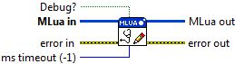

Connector Pane

Set Debug
Sets the debug mode for the provided MLua instance. Enabling debug allows the current line of execution to be retrieved using the 'Get Current Line.vi'.
Parameter(s)
-----------------
- MLua in: Reference to the MLua instance.
- Debug?: True enables debug mode, false disables it.
- ms timeout (-1): The time to wait for the MLua reference to become available. A value of '-1' specifies an infinite timeout.
- error in: Describes error conditions that occur before this VI runs. This input provides standard error in functionality.
- MLua out: Reference to the MLua instance.
- error out: Contains error information. This output provides standard error out functionality.